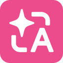
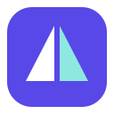

Prism · 单色折光 P
1.1.4 已采用 · 透明底 · 单色 P 与折光切口 · 无渐变和底色块。
Chrome 扩展参考 · 2026-10-27
Google 翻译字母与文字 · 色块叠合
DeepL单色轮廓 · 清晰留白

沉浸式翻译单一主色 · 高对比符号Prism 修改前后

1.1.0旧图标 · 棱镜容易看成帆船1.1.4单色折光 P · 已选定
16 px
48 px
扩展内深色界面 · 反白预览
16 px
48 px